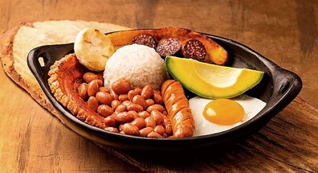

Bandeja Paisa
Región Andina · Antioquia
Uno de los platos más tradicionales y emblemáticos de la gastronomía de Colombia. Está compuesto por arroz, carne asada, frijol, aguacate, huevo, chicharrón, plátano maduro frito, arepa, chorizo y morcilla, todo servido sobre una generosa bandeja.
La historia de este plato se origina en Antioquia. Los campesinos que realizaban trabajos pesados en las fincas necesitaban un plato que les diera energía suficiente — proteínas, carbohidratos y grasas — para seguir trabajando. La Bandeja Paisa fue la respuesta.
Componentes
- Arroz blanco y frijoles rojos
- Carne asada y chicharrón
- Chorizo y morcilla
- Huevo frito y arepa
- Aguacate y plátano maduro
Historia
Nació en los campos antioqueños del siglo XIX como la comida de los arrieros y trabajadores del campo. Hoy es el plato más conocido de Colombia en el mundo y símbolo de la identidad paisa.
Curiosidad
La Bandeja Paisa completa puede tener más de 10 componentes distintos. En los restaurantes de Medellín es común servirla en una bandeja de peltre o cerámica, con cada ingrediente en su propio espacio.